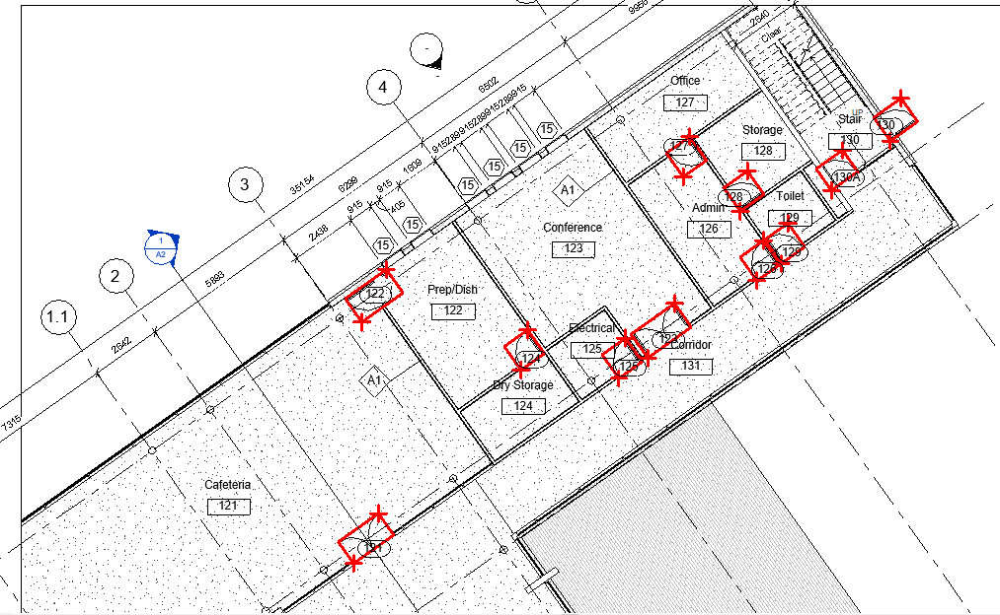

Access UIApplication and Bounding Box on Sheet
A lot of my attention is on family matters, and a couple of Revit API solutions and other items also caught my attention:
- Preface to the Orchid Pavilion poems
- Access UIApplication anywhere
- Determine element bounding box on sheet
- AI and human coding
- XOR
- Three horizons
Preface to the Orchid Pavilion Poems
My daughter's baby was born, and my brother is still alive, though extremely weak.
Moved by that and reading a news item coincided to let me stumble across a Chinese calligraphy and poem from the year 353 AD, the Lantingji Xu, Preface to the Poems Collected from the Orchid Pavilion. I found it touching and fitting to be shared here, and maybe you will enjoy it too:
In the ninth year of Yonghe, at the onset of late spring,
we have gathered at the Orchid Pavilion in the North of Kuaiji Mountain for the purification ritual.
All the literati, the young and the aged, have congregated.
This location has high mountains and steep hills, dense woods, and tall bamboo,
as well as a clear, limpid stream reflecting the surroundings.
We sit by a redirected stream, allowing the wine goblets to float beside us on its winding course.
Although without the accompaniment of music,
the wine and poem reciting are sufficient for us to exchange our feelings.
On this day, the sky is clear, the air is fresh, and a gentle breeze is blowing.
Looking up, we admire the vastness of the universe;
looking down, we see the myriad works of poetry.
Letting the gaze wander and the mind roam, one can fully enjoy the pleasures of sight and sound, truly a delight.
People's interactions with each other quickly pass through a lifetime.
Some would share their ambitions in a chamber;
others may freely indulge in diverse interests and pursuits.
The choices are plenty and our temperaments vary.
We enjoy the momentary satisfaction of pleasures that regale us,
yet we hardly realize how swiftly we age.
As desires fade and circumstances change, grief arises.
What previously gratified us will soon be a relic,
we cannot help but mourn.
Whether life is long or short, there is always an end.
As the ancients said,
"Death and birth are momentous."
How agonizing!
Reading the past compositions reveals a consistent melancholy from the ancients.
One may find themselves lamenting in response to their words, unable to articulate their feelings.
It is absurd to equate life with death,
and it is equally foolish to think that longevity is the same as the short-lived.
The future generations will look upon us,
just like we look upon our past.
How sad!
Hence, we record the people presented here today and their works;
Even though time and circumstances will be different,
the feelings expressed will remain unchanged.
Future readers shall find the same empathy through this collection of poems.
I also asked Gemini to render this in German for a non-English-speaking friend, and it did a good job of that, I think:
Vorwort zu den Gedichten des Orchideen-Pavillons
Im neunten Jahr der Yonghe-Ära, im späten Frühlingsmonat, versammelten wir uns, die Gelehrten von Kuaiji, am Orchideen-Pavillon. Erhabene Berge und steile Gipfel umgaben uns, üppige Bambuswälder und klare Bäche durchzogen die Landschaft. An diesem Tag herrschte ein klarer, milder Wind, die Luft war rein und erfrischend.
Wir versammelten uns an einem geschwungenen Bach, ließen unsere Weinschalen auf dem Wasser treiben und verfassten Gedichte, um unsere Gefühle auszudrücken. Obwohl wir uns nicht kannten, waren wir wie alte Freunde, die sich in tiefem Verständnis verbunden fühlten.
Wir blickten in den Himmel und sahen das Universum in seiner unendlichen Weite; wir blickten auf die Erde und sahen die Fülle der Natur in ihrer ganzen Pracht. Wir schwelgten in der Schönheit der Landschaft und erfreuten uns an der Harmonie der Natur.
Obwohl unsere Leben kurz sind, können wir unsere Herzen und Gedanken in den Künsten und Wissenschaften verewigen. Wir können unsere Gefühle in Gedichten und Gemälden ausdrücken und unsere Weisheit in Büchern und Schriften festhalten.
Wir sollten die Zeit, die uns gegeben ist, nutzen, um das Leben in vollen Zügen zu genießen. Wir sollten uns an der Schönheit der Natur erfreuen, die Freundschaften, die wir schließen, schätzen und die Weisheit, die wir erlangen, teilen.
Lasst uns diesen Tag in Erinnerung behalten, an dem wir uns am Orchideen-Pavillon versammelten, um unsere Freundschaft zu feiern und unsere Liebe zur Natur und zur Kunst auszudrücken.
As Jean-Marc noted, it is paradox how we humans tend to consider beginnings as happy and perceive endings as something to be avoided. We all know all along that life has a beginning and an end.
Access UIApplication Anywhere
Moving on to the Revit API related topics,
Luiz Henrique @ricaun Cassettari shares yet another new discovery,
how to get UIApplication anywhere:
UIApplication is the most useful class inside Revit API, providing access to all events, documents and to know whether your code is in the AddInContext (Revit API Context).
It would be really handy is there was way to have access to UIApplication any time you need.
There is a way, a native way in the RevitAPIUI.dll, to retrieve the UIApplication without any reflection or internal code.
I figured that out that a long time ago (~3 years) when I was messing with events.
The class RibbonItemEventArgs provides a direct reference for a new UIApplication class:
UIApplication uiapp = new Autodesk.Revit.UI.Events.RibbonItemEventArgs().Application;I created a class RevitApplication in
my ricaun.Revit.UI library
just to have a base standard:
UIApplication uiapp = RevitApplication.UIApplication;
UIControlledApplication application = RevitApplication.UIControlledApplication;
bool inAddInContext = RevitApplication.IsInAddInContext;It would be better still if Autodesk would create a static class like RevitApplication in RevitAPIUI.dll.
That concludes my post, I hope you like it.
See yaa!
Many thanks, ricaun, for sharing this!
Determine Element Bounding Box on Sheet
Also Revit API related,
Chuong Ho shares
another important solution providing a more reliable method GetBboxElementOnSheet
for getting element coordinates on sheet:
I just want to share a cleaner solution for anyone who wants to understand or make use of it:
public BoundingBoxXYZ? GetBboxElementOnSheet(
Autodesk.Revit.DB.Document doc,
Autodesk.Revit.DB.Element element,
Autodesk.Revit.DB.Viewport viewport)
{
View? v = (View)doc.GetElement(viewport.ViewId);
if (v == null) return null;
Outline vpoln = viewport.GetBoxOutline(); // Viewport outline in Sheet coords.
BoundingBoxUV voln = v.Outline; // View outline.
if(vpoln == null || voln == null) return null;
int scale = v.Scale;
/*Transform for view coords (very important for rotated view plans set to true north etc.)
completely not important when view plan is not rotated*/
Transform t = Transform.Identity;
t.BasisX = v.RightDirection;
t.BasisY = v.UpDirection;
t.BasisZ = v.ViewDirection;
t.Origin = v.Origin;
// You can probably get this transform above from elsewhere such as cropbox.
var volnCen = (voln.Min + voln.Max) / 2; // View outline centre
XYZ vpcen = (vpoln.MaximumPoint + vpoln.MinimumPoint) / 2; // Viewport centre
vpcen = new XYZ(vpcen.X, vpcen.Y, 0); // Zero z
// Correction offset from VCen to centre of Viewport in sheet coords
XYZ offset = vpcen - new XYZ(volnCen.U, volnCen.V, 0);
BoundingBoxXYZ bb = element.get_BoundingBox(v);
if (bb == null) return null;
// Location of door bounding box in sheet coords
XYZ j1 = t.Inverse.OfPoint(bb.Min).Multiply((Double)1 / scale) + offset;
XYZ j2 = t.Inverse.OfPoint(bb.Max).Multiply(1 / scale) + offset;
// return bb of element in sheet coords
BoundingBoxXYZ boxXyz = new BoundingBoxXYZ();
boxXyz.Min = new XYZ(j1.X, j1.Y, 0);
boxXyz.Max = new XYZ(j2.X, j2.Y, 0);
return boxXyz;
}
Many thanks to Chuong Ho for this solution!
AI and Human Coding
A nice little essay on the topic of using AI for speedy coding versus in-depth learning comes to the conclusion that new junior developers can’t actually code.
XOR
For a purely technical in-depth analysis of a topic that turns out to have a surprisingly large scope, check out Simon Tatham's thoughts on XOR. He made a good stab at summarising everything one might possibly want to know about that.
Three Horizons
Pondering the personal and global turmoil of our times, I chanced upon another way of looking, based on the Three Horizons:
We stand for a vision of a different kind of relationship between humans, life and the planet that we explore in the creative space of the future that we call the third horizon.
Can't say I understand it, but it looks interesting...
... and there is much I don't understand, and it seems to be growing.